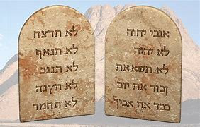

প্রারম্ভে...

আদম এবং ইভ
বাইবেলের প্রথম বইয়ের নাম, জেনেসিস, মানে শুরু। জেনেসিসের প্রথম দুটি অধ্যায় আমাদের বলে যে ঈশ্বর মহাবিশ্ব সৃষ্টি করেছেন: নক্ষত্র, পৃথিবী এবং অন্যান্য সমস্ত গ্রহ এবং প্রতিটি জীব যা আছে বা ছিল। ঈশ্বরের সবচেয়ে বিশেষ সৃষ্টি ছিল মানুষ: মানুষ। মানুষ বিশেষ কারণ তারা ঈশ্বরের নিজস্ব প্রতিমূর্তি তৈরি করা হয়েছে. (জেনেসিস 1:26-27 দেখুন)
জেনেসিসের তৃতীয় অধ্যায়ে বলা হয়েছে কীভাবে পাপ পৃথিবীতে প্রবেশ করেছিল। আদম এবং ইভ, প্রথম পুরুষ এবং প্রথম মহিলা, বিশ্বাস করতে প্রলুব্ধ হয়েছিল যে ঈশ্বর তাদের সাথে মিথ্যা বলেছেন। এই মিথ্যা বিশ্বাস করে, তারা তখন নিশ্চিত হয়েছিল যে তারা আসলে ঈশ্বরের মতো হতে পারে। যখন ঈশ্বর দেখলেন যে তারা অবাধ্য হয়েছে, তখন আদম এবং ইভ আর তাঁর সাথে একই খোলা সম্পর্ক উপভোগ করেননি যা তাদের আগে ছিল; পাপ তাদের ঈশ্বর থেকে বিচ্ছিন্ন করেছিল। এবং তাই প্রত্যেক ব্যক্তির জন্য হয়েছে, একজন ব্যতীত, যিনি তখন থেকে বেঁচে আছেন: আমরা সকলেই পাপের দ্বারা ঈশ্বর থেকে বিচ্ছিন্ন হয়েছি।

আদিপুস্তকের চার ও পঞ্চম অধ্যায় মানবজাতির ক্রমবর্ধমান দুষ্টতার দুঃখজনক কাহিনী চালিয়ে যাচ্ছে। ঈশ্বর এখনও আমাদের সঠিক জীবনযাপনের জন্য তাঁর আদেশ দেননি এবং লোকেরা তাদের পছন্দ মতো আচরণ করেছিল। সমস্ত সভ্যতা সহিংসতা এবং সব ধরনের অনৈতিকতার দিকে ঝুঁকে পড়েছিল। তাঁর সর্বোচ্চ সৃষ্টির দুঃখজনক অবস্থা দেখে ঈশ্বর অনুশোচনা করেছিলেন যে তিনি এমন আচরণের জন্য প্রাণীদের সক্ষম করেছেন।
জেনেসিসের অধ্যায় 4 এবং 5 মানবতার ক্রমবর্ধমান দুষ্টতার দুঃখজনক কাহিনী চালিয়ে যাচ্ছে। ঈশ্বর এখনও আমাদের সঠিক জীবনযাপনের জন্য তাঁর আদেশ দেননি, এবং লোকেরা তাদের পছন্দ মতো আচরণ করেছিল। সমগ্র সভ্যতা সহিংসতা এবং সব ধরনের অনৈতিকতা পরিত্যাগ করেছে বলে মনে হয়েছিল। ঈশ্বর যখন তাঁর চূড়ান্ত ক্লান্তির দুঃখজনক অবস্থা দেখেছিলেন, তখন তিনি অনুশোচনা করেছিলেন যে তিনি এই ধরনের আচরণকে সক্ষম করেছেন।

নূহ
ঈশ্বর যখন তাঁর পাপপূর্ণ সৃষ্টির দিকে তাকালেন, তিনি একজন লোককে খুঁজে পেলেন যিনি প্রভুর সাথে চলতেন: নোহ। ঈশ্বর মানবজাতিকে নিশ্চিহ্ন করার এবং নোহ এবং তার পরিবারের সাথে নতুন করে শুরু করার সিদ্ধান্ত নিয়েছিলেন। জেনেসিসের ছয় থেকে আট অধ্যায় বলে যে কীভাবে ঈশ্বর বন্যার মাধ্যমে সমস্ত মানবজাতিকে ধ্বংস করেছিলেন, শুধুমাত্র নোহ এবং তার স্ত্রী এবং তাদের তিন পুত্র এবং তাদের স্ত্রীকে বাঁচিয়েছিলেন।
জেনেসিসের নয় থেকে এগারো অধ্যায় আমাদের গল্প দেয় যে কীভাবে বন্যার পরে নূহের পুত্র, শেম, হাম এবং জাফেথের দ্বারা পৃথিবী পুনরুজ্জীবিত হয়েছিল। একাদশ অধ্যায়ের শেষে, আমরা একজন খুব বিশেষ মানুষের সাথে পরিচয় করিয়ে দিই, এমন একজন মানুষ যাকে ঈশ্বর এমন একটি লোকের পিতা হতে ডাকবেন যাকে তিনি তাঁর নিজের বলতে পারেন।


আব্রাহাম
জেনেসিসে, বাইবেল আমাদের এমন কিছু লোকের কথা বলে যারা নোহের মতো "ঈশ্বরের সঙ্গে চলত"। ঈশ্বরের সাথে চলার জন্য বিশ্বাসের প্রয়োজন: একটি প্রশ্নাতীত বিশ্বাস যে ঈশ্বর যা করার প্রতিশ্রুতি দেবেন তা করবেন। নোহের জন্য এটি বিশ্বাস করার জন্য মহান বিশ্বাসের প্রয়োজন ছিল যে ঈশ্বর বন্যার মাধ্যমে পৃথিবীর সমগ্র জনসংখ্যাকে ধ্বংস করবেন এবং একটি জাহাজ (একটি বড় নৌকা) তৈরি করার জন্য ঈশ্বরের নির্দেশ অনুসরণ করতে পারেন, যখন তার চারপাশের লোকেরা তাকে উপহাস করেছিল যখন সে কাজ করছিল। জেনেসিস বারো-তে, আমরা অন্য একজনের কথা শিখি যার সম্পর্কে ঈশ্বরের খুব বিশ্বাসের প্রয়োজন হবে: আব্রাহাম।
ঈশ্বর আব্রামের কাছে অনেক কিছু চেয়েছিলেন (পরে ঈশ্বর তার নাম পরিবর্তন করে আব্রাহাম রেখেছেন): তিনি আব্রাহামকে তার জন্মভূমি ছেড়ে যেতে বলেছিলেন এবং এমন জায়গায় যেতে বলেছিলেন যা তিনি কখনও দেখেননি, যেখানে তিনি কাউকে চিনতেন না। তার আনুগত্যের জন্য, ঈশ্বর ইব্রাহিমকে দুটি প্রতিশ্রুতি দিয়েছিলেন:
- তিনি আব্রাহাম এবং তার বংশধরদের কনান দেশ (যাকে আমরা এখন ইস্রায়েল বলি) দেবেন
- ইব্রাহিমের বংশধরদের মধ্য থেকে একটি মহান জাতি বের হবে
আব্রাহামের মনে, এই দুটি প্রতিশ্রুতি অবশ্যই তাদের সাথে সমস্যা ছিল। কেনান ভূমি ইতিমধ্যেই আরও বেশ কিছু লোকের অন্তর্গত ছিল, এবং আব্রাহাম এবং তার স্ত্রীর কোন সন্তান ছিল না। আর অব্রাহামের স্ত্রী সারার বয়স অনেক বেশি ছিল যে সন্তান জন্ম দিতে পারেনি। তা সত্ত্বেও, অব্রাহামের বিশ্বাস ছিল এবং তাই তিনি এবং তার পরিবারের সকলে কেনানের উদ্দেশ্যে যাত্রা করেছিলেন।
আপনি যদি জেনেসিসের 12-23 অধ্যায়ে আব্রাহামের গল্পটি পড়েন, আপনি দেখতে পাবেন যে আব্রাহামের বিশ্বাস নিখুঁত ছিল না: তিনি কখনও কখনও ঈশ্বর এবং তাঁর সময়ের অপেক্ষা না করে "বিষয়গুলি নিজের হাতে নিয়েছিলেন"৷ তবুও, আমরা জেনেসিস 15:6 এ পড়ি, "আব্রাম প্রভুকে বিশ্বাস করেছিলেন এবং তিনি তাকে ধার্মিকতা হিসাবে কৃতিত্ব দিয়েছিলেন।"
এমনকি যখন এটি সহজ নয়, এমনকি যখন আমরা পথ দেখতে পাই না, ঈশ্বর আমাদেরকে তাঁর উপর বিশ্বাস রাখতে বলেন।

ঠিক যেমন ঈশ্বর প্রতিশ্রুতি দিয়েছিলেন, সারার একটি পুত্র হয়েছে; তিনি এবং আব্রাহাম তার নাম ইসহাক রেখেছিলেন। সারা তার বৃদ্ধ বয়সেও সন্তান পেয়ে আনন্দিত।
আইজ্যাক যখন বড় হয়ে বিয়ে করেন, তখন তার দুই ছেলে ছিল, জ্যাকব এবং এষৌ। (জেনেসিস 25:19-জেনেসিস 30)
জ্যাকবের বারোটি পুত্র ছিল (আপনি জেনেসিস 35:23-26 এ তাদের নামের একটি তালিকা দেখতে পারেন)। এই পুত্রদের নাম ইস্রায়েলের বারোটি গোত্রের নাম হয়ে যাবে। (ঈশ্বর আসলে জ্যাকবের নাম ইস্রায়েলে পরিবর্তন করেছিলেন - জেনেসিস 35:10।) এই বারোজন পুত্রের মাধ্যমে, ঈশ্বর আব্রাহামের কাছে তাঁর কাছ থেকে একটি মহান জাতি তৈরি করার প্রতিশ্রুতি পূরণ করেছিলেন।

মুসা
জ্যাকবের এক পুত্র, জোসেফ, মিশরে গিয়ে ফেরাউনের দরবারে একজন মহান অফিসার হয়েছিলেন (আপনি এটি সম্পর্কে জেনেসিস 37-50 এ পড়তে পারেন; এটি একটি দীর্ঘ গল্প, তবে বেশ একটি দুঃসাহসিক কাজ)। অবশেষে, জোসেফের ভাইদের সকল এগারোজনই মিশরে চলে যান। যতদিন জোসেফ বেঁচে ছিলেন, ফেরাউনের সাথে তার সংযোগের কারণে তার পরিবার ভালভাবে বেঁচে ছিল।
জোসেফের মৃত্যুর পর, অন্যান্য প্রজন্মের জন্ম হয়েছিল, এবং একটি নতুন ফারাও ক্ষমতায় এসেছিল যিনি জানতেন না যে জোসেফ রাজপরিবারের পক্ষ থেকে অনুগ্রহ করেছেন। এই নতুন ফেরাউন দেখলেন যে, ইহুদীরা (ইসরাঈলরা ইহুদী বা ইহুদী জনগণ নামেও পরিচিত ছিল) সংখ্যায় অনেক বেড়ে গেছে। এটি তাকে ভীত করেছিল যে তারা তার সরকারকে পরাভূত করতে পারে, তাই তিনি মিশরে সমস্ত ইস্রায়েলীয়দের (ইহুদি) দাস বানিয়েছিলেন।

Exodus 2:23 এ, বাইবেল আমাদের বলে যে ইস্রায়েলীয়রা মিশরের দাস হিসেবে অনেক কষ্ট ভোগ করেছিল। তারা তাদের উদ্ধার করার জন্য ঈশ্বরের কাছে চিৎকার করেছিল, এবং ঈশ্বর তাদের কথা শুনেছিলেন। ইস্রায়েলকে দাসত্ব থেকে উদ্ধার করার জন্য তিনি ইহুদিদের মধ্য থেকে একজন ব্যক্তিকে বেছে নিয়েছিলেন। সেই ব্যক্তির নাম ছিল মূসা।
আব্রাহামের বিপরীতে, যিনি ঈশ্বরের ডাকে মনোযোগ দিয়েছিলেন, মোশি প্রথমে প্রভুকে অন্য কাউকে ব্যবহার করার চেষ্টা করেছিলেন। (যাত্রাপুস্তক 4:1-14) ঈশ্বর মোশিকে দেখিয়েছিলেন যে এটি ঈশ্বর হবেন, মোশি নয়, যিনি আসলে ইহুদি দাসদের মুক্ত করার জন্য ফেরাউনের হাতকে জোর করবেন। মূসা কেবলমাত্র ঈশ্বরের দূত হবেন।
মিশরে, তারা অনেক দেবতার পূজা করত -- মূর্তি -- আব্রাহাম, আইজ্যাক এবং জ্যাকবের ঈশ্বর নয়। যখন মূসা প্রথম তার কাছে এসেছিলেন (যাত্রাপুস্তক 5), ফেরাউন বিদ্রুপ করেছিল: "প্রভু কে, যে আমি তাঁর আনুগত্য করব?"
মূসা ফেরাউনের কাছে দ্বিতীয় অনুরোধ নিয়ে ফিরে আসেন যে ফেরাউন ইহুদি দাসদের মুক্তি দেন। এই সময়, যাইহোক, মোশি তার সাথে ঈশ্বরের কাছ থেকে একটি সতর্কবাণী বহন করে: যদি ফারাও ইস্রায়েলীয়দের মুক্ত করতে রাজি না হয়, তবে ঈশ্বর মিশরে নয়টি প্লেগের একটি সিরিজ প্রকাশ করবেন: ধ্বংসের প্লেগ, রোগ এবং অন্ধকার। আশ্চর্যজনকভাবে, এই প্লেগের ভয়াবহ প্রভাবের পরেও, ফেরাউন এখনও ঈশ্বরের শক্তিতে বিশ্বাস করতে অস্বীকার করেছিল এবং ইহুদিদের মুক্ত করবে না। (যাত্রাপুস্তক 7:15-যাত্রা 11)
দশম প্লেগ (এক্সোডাস 12) এর পরেই ফারাও অবশেষে মিশরের দাসদের মুক্ত করতে রাজি হয়েছিল। প্রত্যেক মিশরীয় পরিবারের প্রথমজাত পুত্রকে হত্যা করা হবে। যাইহোক, ঈশ্বর ইহুদিদের প্রথমজাত পুত্রদের রক্ষা করবেন। তিনি তাদের একটি মেষশাবক বলি দিতে এবং তাদের বাড়ির দরজায় এর রক্ত আঁকতে নির্দেশ দেন। যখন মৃত্যুর ফেরেশতা প্রথমজাত পুত্রদের হত্যা করতে এসেছিলেন, তখন তিনি সমস্ত ইস্রায়েলীয়দের বাড়িগুলিকে "পাড়ি দেবেন" যারা তাদের দরজায় মেষশাবকের রক্ত আঁকার জন্য তাঁর নির্দেশাবলী অনুসরণ করেছিল।.
আজ অবধি, ইহুদিরা প্রতি বছর নিস্তারপর্বের উত্সব উদযাপন করে যে অলৌকিক ঘটনাটি তাদের দাসত্ব থেকে মুক্ত করতে সাহায্য করেছিল।
মুসার নেতৃত্বে ইহুদিরা মিশর থেকে তাদের যাত্রা শুরু করে। ঈশ্বরের হাতে মিশরে যা কিছু ঘটেছিল তার পরেও, ফেরাউন ইহুদিদের দাসত্বে রাখার জন্য শেষবারের মতো চেষ্টা করেছিল।

মিশরীয় সেনাবাহিনী ইস্রায়েলীয়দের লোহিত সাগরে তাড়া করেছিল, ভেবেছিল যে তারা তাদের পানিতে আটকে রেখেছে (যাত্রা 14)। ইস্রায়েলীয়রা আতঙ্কিত হতে শুরু করেছিল, কিন্তু মূসা তাদের ঈশ্বরের প্রতি বিশ্বাস রাখতে অনুরোধ করেছিলেন। ঈশ্বর মূসাকে পানির কাছে তার হাঁটার লাঠি বাড়াতে আদেশ করেছিলেন। অলৌকিকভাবে, লোহিত সাগরের জল বিভাজিত হয়েছিল, শুষ্ক ভূমির একটি পথ তৈরি করেছিল যা তাদের অন্য দিকে পার হতে দেয়। ফেরাউনের বাহিনী একই পথ দিয়ে অতিক্রম করার চেষ্টা করলে উভয় দিক থেকে সমুদ্রের পানি নেমে আসে এবং তাদের সবাইকে ডুবিয়ে দেয়। অবশেষে, ইস্রায়েলের লোকেরা মিশর থেকে বেরিয়ে এসে দাসত্ব থেকে মুক্ত হয়েছিল।
এবং, ঠিক যেমন ঈশ্বর মোশিকে বলেছিলেন যখন তিনি তাকে প্রথম ডেকেছিলেন, এটি ঈশ্বরের শক্তিশালী হাত ছিল যে এটি সমস্ত সম্পন্ন করেছিল!
দশটি আদেশ
আমরা যেমন মহাপ্লাবনের গল্পে দেখেছি, ঈশ্বর তখনও মানুষের কাছে তাঁর আইন দেননি। ইহুদিরা যখন ইব্রাহীম এবং তার বংশধরদের কাছে ঈশ্বরের প্রতিশ্রুতি দিয়েছিলেন সেই দেশে তাদের পথ চলতে শুরু করলে, ঈশ্বর মুসাকে সিনাই পর্বতের চূড়ায় আরোহণের নির্দেশ দেন। সেখানে, ঈশ্বরের অপ্রতিরোধ্য মহিমা থেকে লোকেদের রক্ষা করার জন্য ধোঁয়ায় আবৃত পর্বত সহ, মোশি তাঁর লোকেদের জন্য ঈশ্বরের আদেশগুলি পেয়েছিলেন (যাত্রাপুস্তক 20:1-17)।
ইহুদিরা আর মিশরের দাসত্বে ছিল না বলেই, এর মানে এই নয় যে তাদের সব ঝামেলা শেষ হয়ে গেছে। ঈশ্বর তাদের প্রতিশ্রুত দেশে তাদের যাত্রার গল্প চল্লিশ বছর সময়কাল জুড়ে!

ইসরাইলদের ঈমান দুর্বল ছিল; তারা প্রায়ই সন্দেহ করত যে ঈশ্বর তাদের জন্য ব্যবস্থা করবেন। তারা মাঝে মাঝে এতটাই নিরুৎসাহিত হয়ে পড়ে যে, তারা আসলে মিশরে ফেরার কথা বলে! এবং, সম্ভবত সবথেকে খারাপ, তারা এমনকি উপাসনা করার জন্য মূর্তি তৈরি করেছিল কারণ তারা ঈশ্বরকে অনেক সন্দেহ করেছিল।
মূসার মৃত্যুর গল্পটি ডিউটেরোনমির 34 তম অধ্যায়ে লিপিবদ্ধ করা হয়েছে। এটি দ্বিতীয় বিবরণের বইতে রয়েছে যে ঈশ্বর সিনাই পর্বতে তাঁর লোকেদের দেওয়া আইনগুলির উপর প্রসারিত করেছেন। তিনি রূপরেখা দেন যে কীভাবে লোকেরা তাদের সহ-ইহুদিদের মধ্যে নিজেদের আচরণ করবে এবং কীভাবে তারা ঈশ্বরের উপাসনা করবে।